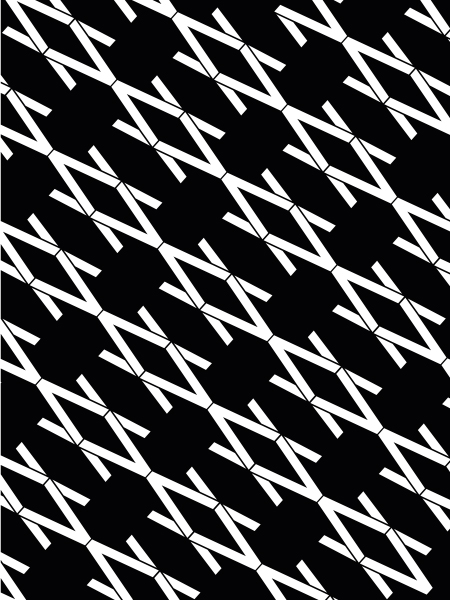

CE QUE JE PRODUIS
DRONIQUEMENT PARLANT
Etant tombé amoureux du Bassin d’Arcachon, je souhaitais travailler sur le paradis hivernal qu’incarne cette région. Avec l’aide d’un drone, et à l’image d’un mini-reporter je réalise ce portfolio de onze photos -plus ou moins légales- s’appuyant sur les différentes textures que la presqu’île nous offre. Je souhaitais susciter l’attention du lecteur sur des «motifs» vu du ciel qu’il n’a pas l’habitude de voir.
ILLUSTRATIVEMENT PARLANT
Il était une fois un cours de modèle vivant avec François Tilly un peu particulier... sur le gribouillage ! Dessiner des corps, dans différentes positions en se lachant un maximum.
De ce cours est né ce que mes potes et moi-même appelons le "bicnewstyle". Un style graphique alliant souvent portraits et gribouillages. Un petit book est en cours de création en ce moment.
TYPOGRAPHIQUEMENT PARLANT
J'ai une réelle affinité avec la typographie. Dessiner des courbes pour des logos, créer une typographie avec des mesures personnelles, ou juste le plaisir d'écrire sont des choses qui me passionnent et où je passe énormément de temps.
